Week 1 函數與反函數（Function and the Inverse Function）
AP Calculus I（115 學年）Lecture Note 1 教學與題解
1.1 目標與函數的基本詞彙
AP Calculus I 的第一個目標是畫函數圖形（Function Sketching）。講義給了一串關鍵字：
$$D-I-S-P-A-D-D-D$$| 字母 | 英文 | 要問的問題 |
|---|---|---|
| D | Domain | 定義域：$x$ 可以代哪些數？ |
| I | Intercepts | 截距：和 $x$ 軸、$y$ 軸交在哪？ |
| S | Symmetry | 對稱：偶函數（對 $y$ 軸對稱）還是奇函數（對原點對稱）？ |
| P | Period | 週期：會不會一直重複？ |
| A | Asymptotes | 漸近線：靠近哪些直線卻碰不到？ |
| D | Derivative | 一階導數：哪裡遞增、哪裡遞減？ |
| D | Double derivative | 二階導數：哪裡凹向上、哪裡凹向下？ |
| D | Draw | 把以上資訊畫成圖 |
後面兩個 D 要等學了微分才用得上，這週先練前面幾項。
兩個基本詞定義域（domain）是可以代進去的 $x$ 的集合；值域（range）是算出來的 $y$ 的集合。
偶函數：$f(-x)=f(x)$，圖形左右對稱。奇函數：$f(-x)=-f(x)$，圖形繞原點轉半圈後不變。
題 1描述並畫出 $f(x)=\sin(x)$。
- 定義域：$\mathbb R$；值域：$[-1,1]$
- 截距：$\sin x=0$ 時 $x=k\pi$（$k$ 為整數），$y$ 截距為 $0$
- 對稱：$\sin(-x)=-\sin x$，奇函數
- 週期：$2\pi$
- 漸近線：無
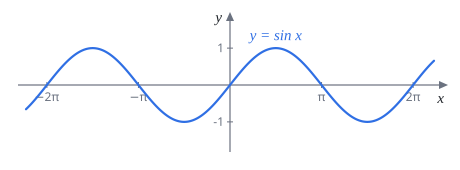
題 2描述並畫出 $f(x)=\begin{cases}\dfrac1x, & x\gt0\\ x-1, & x\le0\end{cases}$。
分段函數就是兩段分開畫，再注意交界 $x=0$ 屬於哪一段。
- 定義域：$\mathbb R$（$x=0$ 歸下面那段，$f(0)=-1$，所以 $\frac1x$ 的分母不會碰到 $0$）
- 值域：右段 $\frac1x$ 給出 $(0,\infty)$，左段 $x-1$ 給出 $(-\infty,-1]$，合起來是 $(-\infty,-1]\cup(0,\infty)$
- 截距：$y$ 截距 $(0,-1)$；$x$ 截距沒有（$\frac1x$ 不會是 $0$，$x-1=0$ 要 $x=1$ 但那不在左段）
- 對稱、週期：都沒有
- 漸近線：$x\to0^+$ 時 $\frac1x\to\infty$，垂直漸近線 $x=0$（只有右側）；$x\to\infty$ 時 $\frac1x\to0$，水平漸近線 $y=0$
在 $x=0$ 圖形斷開：左邊停在 $(0,-1)$（實心點），右邊往上衝到無限大。
題 3描述並畫出 $f(x)=|x|$。
絕對值的意思是 $|x|=\begin{cases}x, & x\ge0\\ -x, & x\lt0\end{cases}$，也是分段函數。
- 定義域：$\mathbb R$；值域：$[0,\infty)$
- 截距：只有原點
- 對稱：$|-x|=|x|$，偶函數
- 週期、漸近線：無
圖形是 V 字形，原點是尖角（Week 4 題 2 會看到這裡不可微）。
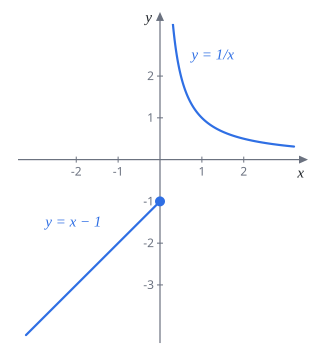
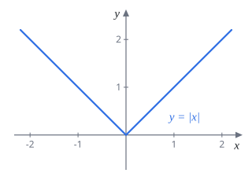
1.2 指數函數與自然對數
指數函數是 $f(x)=a^x$，底 $a\gt0$。幾個所有指數函數共通的性質：
- $a^0=1$，所以圖形都通過 $(0,1)$。
- $a^x\gt0$，圖形永遠在 $x$ 軸上方，$x$ 軸是水平漸近線。
- $a\gt1$ 時遞增，$a$ 越大，右邊升得越快、左邊貼 $x$ 軸貼得越緊。
- $0\lt a\lt1$ 時遞減；$a$ 越小，降得越快。因為 $a^x=\left(\frac1a\right)^{-x}$，$a^x$ 和 $\left(\frac1a\right)^x$ 對 $y$ 軸互相對稱。
比大小套路看 $x=1$ 那條直線：$y=a^x$ 在 $x=1$ 的高度剛好是 $a$。所以在 $x=1$ 誰高，誰的底就大。遞減的那些看 $x=-1$ 更清楚：高度是 $\frac1a$，越高代表 $a$ 越小。
題 4下圖是四個指數函數 $y=a^x$、$b^x$、$c^x$、$d^x$ 的圖形，比較 $a,b,c,d$ 的大小。
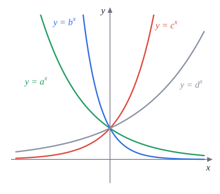
遞增的兩條（$c^x$、$d^x$）：底大於 $1$。在 $x\gt0$ 那側 $c^x$ 比 $d^x$ 高，所以 $c\gt d\gt1$。
遞減的兩條（$a^x$、$b^x$）：底介於 $0$ 和 $1$。在 $x\lt0$ 那側 $b^x$ 衝得比 $a^x$ 高（降得更陡），代表 $b$ 更小，所以 $0\lt b\lt a\lt1$。
$b\lt a\lt1\lt d\lt c$
$e$ 是怎麼來的：每條 $y=a^x$ 都過 $(0,1)$，但在那一點的切線斜率不一樣。$2^x$ 的斜率大約 $0.69$，$3^x$ 的斜率大約 $1.10$。所以在 $2$ 和 $3$ 之間，一定有某個底讓斜率剛好是 $1$，這個數就叫 $e\approx2.718$。
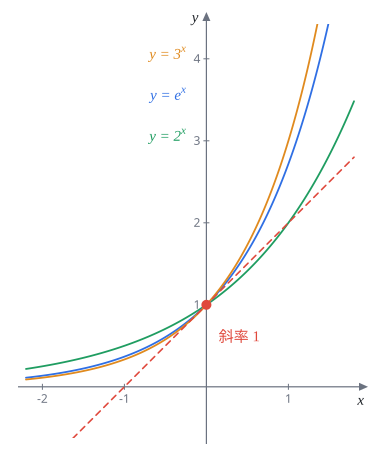
定義 1.2.1$e$ 是讓 $y=e^x$ 在 $(0,1)$ 的切線斜率等於 $1$ 的那個實數。
定義 1.2.2（另一種定義）$\displaystyle e=\lim_{x\to\infty}\left(1+\frac1x\right)^x$。
兩個定義其實是同一個數，Week 5 的 5.4 節（題 13）會證明。
1.2.1 自然對數 $\ln x$
定義 1.2.3$\ln x=\log_e x$，也就是以 $e$ 為底的對數。$\ln x=y$ 的意思就是 $e^y=x$。
對數是指數的反過來：$\log_a x$ 問的是「$a$ 要幾次方才會等於 $x$」。所以 $y=\log_a x$ 的圖形就是 $y=a^x$ 對 $y=x$ 翻轉，都通過 $(1,0)$，定義域只有 $x\gt0$。
對數律（必背）$a\gt0$、$a\neq1$，$A,B\gt0$：
$$\begin{aligned} \log_a(AB) &= \log_aA+\log_aB \\[4pt] \log_a\frac AB &= \log_aA-\log_aB \\[4pt] \log_aA^c &= c\log_aA \end{aligned}$$ $$\text{換底：}\;\log_aA=\frac{\ln A}{\ln a}$$題 5下圖是 $y=\log_a x$（綠）、$y=\log_b x$（藍）、$y=\log_c x$（紅）的圖形，比較 $a,b,c$。
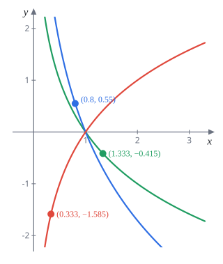
看形狀：紅色遞增，$c\gt1$；綠、藍遞減，$a,b$ 都在 $0$ 和 $1$ 之間。
用標出的點算：$\log_a x=y$ 等於 $a^y=x$，所以 $a=x^{1/y}$。
- 紅：$c^{-1.585}=0.333\approx\frac13$，所以 $c^{1.585}=3$，$c=3^{1/1.585}\approx2$。
- 綠：$a^{-0.415}=1.333\approx\frac43$，所以 $a=\left(\frac43\right)^{-1/0.415}\approx\frac12$。
- 藍：$b^{0.55}=0.8$，所以 $b=0.8^{1/0.55}\approx\frac23$。
（驗算：$\log_2\frac13=-\log_23\approx-1.585$，$\log_{1/2}\frac43=-\log_2\frac43\approx-0.415$。）
$a\lt b\lt c$（$a\approx\frac12$，$b\approx\frac23$，$c\approx2$；與講義答案相同）
不算數字也能判斷 $a$ 和 $b$：底越接近 $1$，$\log$ 的圖形越陡（$\log_1$ 會變成無限陡）。在 $x\gt1$ 這一側，藍線比綠線陡，所以 $b$ 比 $a$ 更接近 $1$，$b\gt a$。
題 6解方程式 $\ln(x)-\ln(4x+2)=1$。
先寫定義域：$\ln$ 裡面要大於 $0$，所以 $x\gt0$ 且 $4x+2\gt0$，合起來 $x\gt0$。
用 $\ln A-\ln B=\ln\frac AB$：
$$\ln\frac{x}{4x+2}=1\quad\Longrightarrow\quad\frac{x}{4x+2}=e$$ $$x=4ex+2e\quad\Longrightarrow\quad x(1-4e)=2e\quad\Longrightarrow\quad x=\frac{2e}{1-4e}$$但 $1-4e\lt0$，這個 $x$ 是負數（約 $-0.55$），不在定義域裡，必須丟掉。
無解
另一個看法：$x\gt0$ 時 $\dfrac{x}{4x+2}\lt\dfrac{x}{4x}=\dfrac14$，根本不可能等於 $e$。這題的教訓是解對數方程一定要回頭檢查定義域。
題 7解方程式 $\ln\left(3^x\cdot2^{2x+1}\right)=1$。提示：$\log_a(AB)=\log_aA+\log_aB$，$\log_ab^c=c\log_ab$。
先拆乘積，再把次方拉下來：
$$\ln3^x+\ln2^{2x+1}=1\quad\Longrightarrow\quad x\ln3+(2x+1)\ln2=1$$把含 $x$ 的項放一起：
$$x(\ln3+2\ln2)=1-\ln2$$$x=\dfrac{1-\ln2}{2\ln2+\ln3}$（與講義答案相同）
這裡 $3^x\cdot2^{2x+1}$ 永遠是正的，不用擔心定義域。
1.3 反函數
反函數就是「把原函數做的事情復原」的函數。$f$ 把 $x$ 送到 $y$，$f^{-1}$ 就把 $y$ 送回 $x$。
定義 1.3.1$f$ 的反函數是滿足 $g(f(x))=f(g(x))=x$ 的函數 $g$，記作 $f^{-1}(x)$。
$f^{-1}(x)$ 不是 $\dfrac{1}{f(x)}$。這裡的 $-1$ 是「反過來」的意思，不是倒數。
求反函數套路
- 寫 $y=f(x)$。
- 把 $x$ 解出來，寫成 $x=\text{（用 }y\text{ 表示的式子）}$。
- $x$、$y$ 互換，得到 $f^{-1}(x)$。
題 8求 $f(x)=x^5$ 的反函數。
$y=x^5$，兩邊開五次方根：$x=\sqrt[5]{y}$。奇數次方根對負數也有定義，所以對所有實數都成立。
$f^{-1}(x)=\sqrt[5]{x}=x^{1/5}$
驗證：$f(f^{-1}(x))=\left(x^{1/5}\right)^5=x$。
1.3.2 反函數的圖形
$y=f(x)$ 的圖形上有一點 $(a,b)$，代表 $f(a)=b$，也就是 $f^{-1}(b)=a$，所以 $(b,a)$ 在 $f^{-1}$ 的圖形上。把每個點的座標對調，在圖上就是對直線 $y=x$ 鏡射。
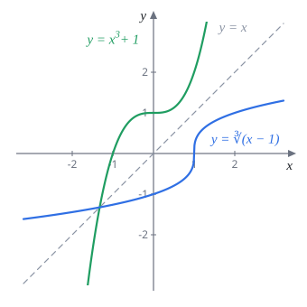
題 9$f(x)=\dfrac{e^x+1}{1-e^x}$，求 $f^{-1}(x)$。
令 $y=\dfrac{e^x+1}{1-e^x}$，目標是解出 $x$。把 $e^x$ 當成一個整體：
$$y(1-e^x)=e^x+1\quad\Longrightarrow\quad y-ye^x=e^x+1$$含 $e^x$ 的放一邊：
$$y-1=e^x(y+1)\quad\Longrightarrow\quad e^x=\frac{y-1}{y+1}\quad\Longrightarrow\quad x=\ln\frac{y-1}{y+1}$$$x$、$y$ 互換：
$f^{-1}(x)=\ln\left(\dfrac{x-1}{x+1}\right)$（與講義答案相同）
定義域：$\dfrac{x-1}{x+1}\gt0$，即 $x\gt1$ 或 $x\lt-1$。這正好是 $f$ 的值域：$e^x$ 在 $(0,1)$ 時 $f\gt1$，$e^x\gt1$ 時 $f\lt-1$。
1.4 一對一函數
不是每個函數都有反函數。
題 10$f(x)=x^2$ 的反函數是什麼？
想把 $y=1$ 送回去，但 $f(1)=f(-1)=1$，不知道該送回 $1$ 還是 $-1$。兩個 $x$ 對到同一個 $y$（「二對一」），反函數就定不出來。
在整個 $\mathbb R$ 上沒有反函數
補救辦法是砍掉一半定義域：只看 $x\ge0$，則反函數為 $\sqrt x$。1.5 節的反三角函數也是用這招。
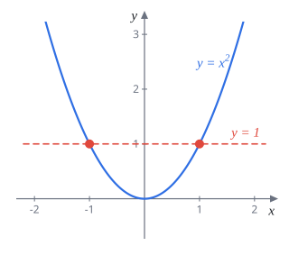
定義 1.4.1（一對一）若 $x\neq y$ 必推得 $f(x)\neq f(y)$，則稱 $f$ 為一對一（one-to-one）。白話：不同的輸入一定給出不同的輸出。
定理 1.4.1$f$ 的反函數存在 $\iff$ $f$ 是一對一。
定理 1.4.2（水平線檢驗）$f$ 是一對一 $\iff$ 每條水平線和 $y=f(x)$ 的圖形最多交一點。
定理 1.4.3（嚴格單調推得一對一）$f$ 嚴格遞增或嚴格遞減，則 $f$ 是一對一，因此反函數存在。
定理 1.4.3 的理由：嚴格遞增的圖形一路往上，任何水平線最多碰到它一次，通過水平線檢驗。遞減同理。
題 11$f(x)=2^x$ 是一對一嗎？
底 $2\gt1$，$2^x$ 嚴格遞增（$x$ 變大，$2^x$ 一定變大）。由定理 1.4.3，是一對一。
也可以用水平線檢驗：$y=k\gt0$ 的水平線交圖形恰好一點，$y=k\le0$ 的完全不交。
它的反函數就是 $\log_2x$。
反過來不成立：一對一不一定單調。
題 12構造一個一對一、但不是單調的函數。提示：考慮 $f:[0,2]\to[0,2]$，
$$f(x)=\begin{cases}1-x, & 0\le x\le1\\ x, & 1\lt x\le2\end{cases}$$畫出圖形並驗證 $f$ 是一對一。
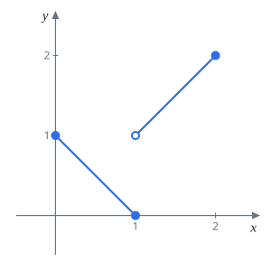
不單調：在 $[0,1]$ 遞減（$f(0)=1$ 降到 $f(1)=0$），在 $(1,2]$ 遞增，整體既不是遞增也不是遞減。
一對一：
- 第一段 $1-x$ 嚴格遞減，段內不會重複，值域 $[0,1]$。
- 第二段 $x$ 嚴格遞增，段內不會重複，值域 $(1,2]$。
- 兩段的值域 $[0,1]$ 和 $(1,2]$ 不重疊，所以跨段也不會撞到同一個值。
因此不同的 $x$ 一定給出不同的 $f(x)$，$f$ 是一對一。圖上看：每條水平線最多交一點（$y=1$ 只交到 $(0,1)$，因為 $(1,1)$ 是空心點）。
補充：解 $y=f(x)$ 會發現 $f^{-1}=f$，這個函數的反函數就是自己。
1.5 反三角函數
$\sin x$ 每 $2\pi$ 重複一次，水平線會交它無限多次，不是一對一。做法和題 10 一樣：砍掉一部分定義域，只留一段剛好一對一、又能取到所有值的部分。
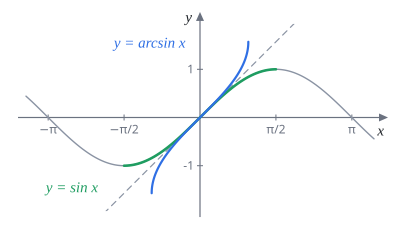
| 定義域 | 值域 | 原函數保留的區間 | |
|---|---|---|---|
| $\sin^{-1}x$ | $[-1,1]$ | $\left[-\frac\pi2,\frac\pi2\right]$ | $\sin$ 在第一、四象限角 |
| $\cos^{-1}x$ | $[-1,1]$ | $[0,\pi]$ | $\cos$ 在第一、二象限角 |
| $\tan^{-1}x$ | $\mathbb R$ | $\left(-\frac\pi2,\frac\pi2\right)$ | $\tan$ 在第一、四象限角（端點沒定義） |
講義的表格要自己填，上表已填好。記法：反函數的定義域、值域就是原函數保留那段的值域、定義域對調。$\sin^{-1}x$ 也寫成 $\arcsin x$，其他同理。
為什麼 $\cos$ 保留 $[0,\pi]$ 而不是 $\left[-\frac\pi2,\frac\pi2\right]$？因為 $\cos$ 在 $\left[-\frac\pi2,\frac\pi2\right]$ 左右對稱，不是一對一；在 $[0,\pi]$ 才從 $1$ 一路降到 $-1$。
題 13畫出 $y=\arccos(x)$ 的圖形。
先畫 $y=\cos x$ 在 $[0,\pi]$ 的一段：從 $(0,1)$ 經過 $\left(\frac\pi2,0\right)$ 降到 $(\pi,-1)$。再把每個點座標對調（對 $y=x$ 鏡射）：
- $(0,1)\to(1,0)$
- $\left(\frac\pi2,0\right)\to\left(0,\frac\pi2\right)$
- $(\pi,-1)\to(-1,\pi)$
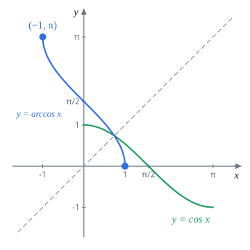
「三角函數套反三角函數」套路令 $\theta=\text{反三角函數}(x)$，依定義畫一個直角三角形，標好兩邊，用畢氏定理補第三邊，再讀出要的三角函數值。最後依 $\theta$ 的範圍決定正負號。
題 14化簡 $\cos\left(\tan^{-1}(x)\right)$。
令 $\theta=\tan^{-1}x$，則 $\tan\theta=x=\dfrac x1$，$-\frac\pi2\lt\theta\lt\frac\pi2$。
畫直角三角形：對邊 $x$、鄰邊 $1$，斜邊 $\sqrt{1+x^2}$。所以 $\cos\theta=\dfrac{\text{鄰邊}}{\text{斜邊}}=\dfrac{1}{\sqrt{1+x^2}}$。
$\theta$ 在 $\left(-\frac\pi2,\frac\pi2\right)$，$\cos\theta\gt0$，取正號沒問題（$x$ 是負的也一樣）。
$\cos\left(\tan^{-1}x\right)=\dfrac{1}{\sqrt{1+x^2}}$
不畫三角形的做法：$\sec^2\theta=1+\tan^2\theta=1+x^2$，$\cos\theta=\dfrac{1}{\sqrt{1+x^2}}$。
題 15(a) 證明 $\cos\left(\sin^{-1}(x)\right)=\sqrt{1-x^2}$。
(b) 求 (1) $\sin^{-1}\left(\sin\frac{3\pi}{4}\right)$；(2) $\sin\left(\cos^{-1}\frac{1}{\sqrt2}\right)$；(3) $\cos^{-1}\left(\sin\frac{3\pi}{4}\right)$。
(a) 令 $\theta=\sin^{-1}x$，則 $\sin\theta=x$，$-\frac\pi2\le\theta\le\frac\pi2$。
$$\cos^2\theta=1-\sin^2\theta=1-x^2\quad\Longrightarrow\quad\cos\theta=\pm\sqrt{1-x^2}$$$\theta$ 在 $\left[-\frac\pi2,\frac\pi2\right]$，$\cos\theta\ge0$，取正號，得證。
(b)(1) 陷阱題。$\sin^{-1}$ 的值域是 $\left[-\frac\pi2,\frac\pi2\right]$，答案不可能是 $\frac{3\pi}4$。要先算裡面：
$$\sin\frac{3\pi}4=\frac{\sqrt2}2\quad\Longrightarrow\quad\sin^{-1}\frac{\sqrt2}2=\frac\pi4$$(2) $\cos^{-1}\frac{1}{\sqrt2}=\frac\pi4$（在 $[0,\pi]$ 裡 $\cos$ 等於 $\frac{1}{\sqrt2}$ 的角），所以 $\sin\frac\pi4=\frac{1}{\sqrt2}$。
(3) $\sin\frac{3\pi}4=\frac{\sqrt2}2$，$\cos^{-1}\frac{\sqrt2}2=\frac\pi4$。
(1) $\dfrac\pi4$ (2) $\dfrac{1}{\sqrt2}$ (3) $\dfrac\pi4$（與講義答案相同）
(b)(1) 的重點：$\sin^{-1}(\sin x)=x$ 只在 $x\in\left[-\frac\pi2,\frac\pi2\right]$ 時成立。反方向 $\sin\left(\sin^{-1}x\right)=x$ 則對所有 $x\in[-1,1]$ 都成立。
本週必背總整理
- 畫圖檢查清單 DISPADDD：定義域、截距、對稱、週期、漸近線（兩個導數 D 之後學）
- 指數函數：都過 $(0,1)$；比較底的大小看 $x=1$ 的高度
- $e$ 的定義：$y=e^x$ 在 $(0,1)$ 的切線斜率為 $1$；也等於 $\displaystyle\lim_{x\to\infty}\left(1+\frac1x\right)^x$
- 對數律：乘變加、除變減、次方拉下來、換底 $\log_aA=\dfrac{\ln A}{\ln a}$；解對數方程要檢查定義域
- 反函數：解出 $x$ 再互換；圖形對 $y=x$ 鏡射；存在 $\iff$ 一對一 $\iff$ 通過水平線檢驗
- 嚴格單調 $\Rightarrow$ 一對一，反之不成立
- 反三角函數：$\sin^{-1}$ 值域 $\left[-\frac\pi2,\frac\pi2\right]$、$\cos^{-1}$ 值域 $[0,\pi]$、$\tan^{-1}$ 值域 $\left(-\frac\pi2,\frac\pi2\right)$；化簡用直角三角形